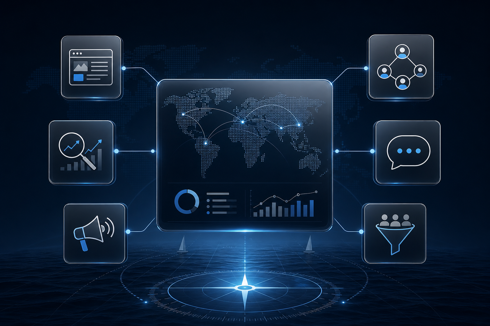

AI 智能建站、WordPress、Shopify 与定制开发统一规划，让网站承接流量、询盘和成交。
SEO、Google SEM、Facebook 投流、社媒运营和邮件营销共同服务于询盘质量。
文章、问答、视频、工具和案例共同组成可持续积累的内容资产。
通过产品目录、技术内容、问答和 AI 客服提升工业询盘。 吾日三省吾身把网站、内容、广告、AI 与数据追踪放在同一个增长系统里设计，帮助外贸企业更稳定地获得海外客户。
围绕目标客户、内容、转化与数据追踪设计，让网站从展示型资产升级为可运营、可复盘、可增长的获客系统。
拆解目标市场、客户画像、关键词机会和栏目架构。
设计高可信视觉、内容层级、询盘入口和移动端体验。
接入 SEO、广告追踪、AI 客服、邮件与 CRM 自动化。

继续查看同一板块下的页面，组合成更完整的出海增长路径。
集中展示建站、SEO、广告、AI 客服、展会获客和自动化案例。
优化品牌视觉、产品页、评论、套装组合和再营销事件。
按国家、行业和产品场景拆分落地页，降低无效点击。
用资料库和多语言客服提高响应速度与线索筛选效率。
会前邀约页面、现场扫码表单、会后邮件培育和销售提醒。
输入现有网站、行业和目标市场，梳理栏目建议、SEO 问题、转化风险和 AI 升级方向。